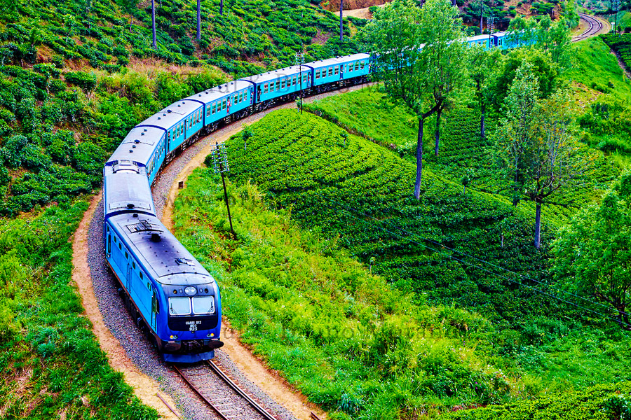
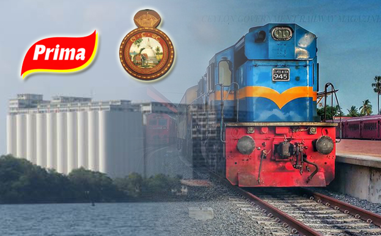
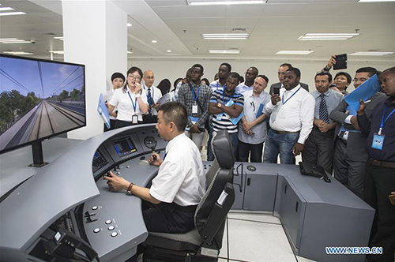

Sri-Lanka Railway Department
Special Trains

Sri Lanka Railways has already made arrangements to operate a special train service between Anuradhapura & Mihintalaya for the convenience of the Poson pilgrims. Please download the relevant bid document as follows.
Transpotation

General Manager of Sri Lanka Railways, Mr. B.A.P. Ariyarathne stated that it is expected to transport 15000 tons of flour by the train per month in future.
Installation

An agreement has been signed at the Ministry of Transport and Civil Aviation,Sethsiripaya, Battaramulla to install 300 ATM machines of people's bank in Railway Stations islandwide.
Appoinments

New appointments for several grades in Sri Lanka Railway Department were made on 14.03.2017 with the cheiftainship of Mr. Nimal Siripala De Silva, Hon.Minister of Transport and Civil Aviation.